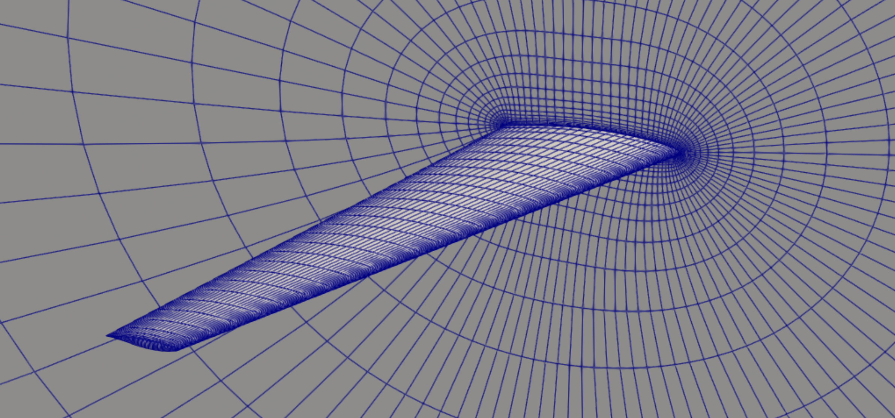
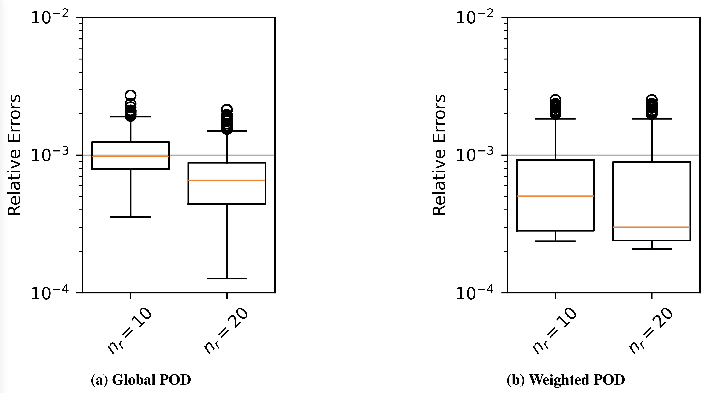
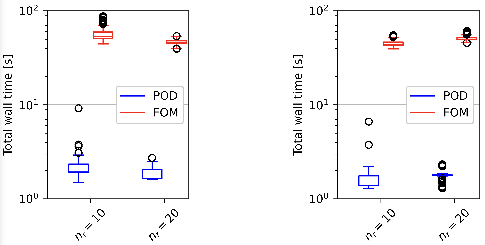
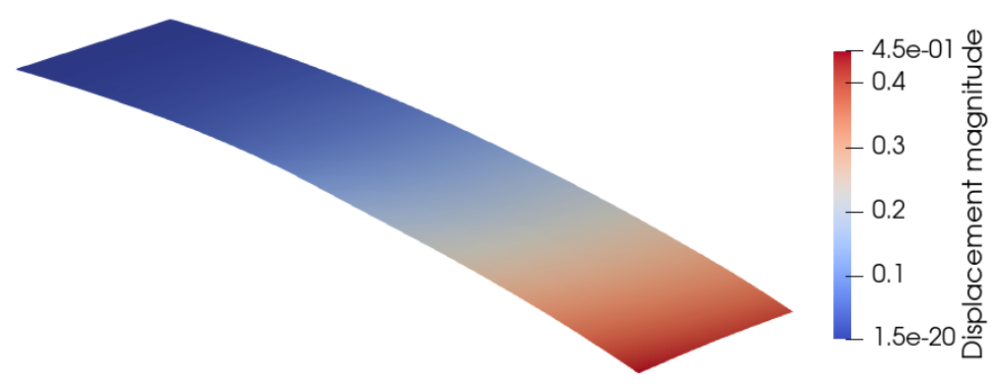
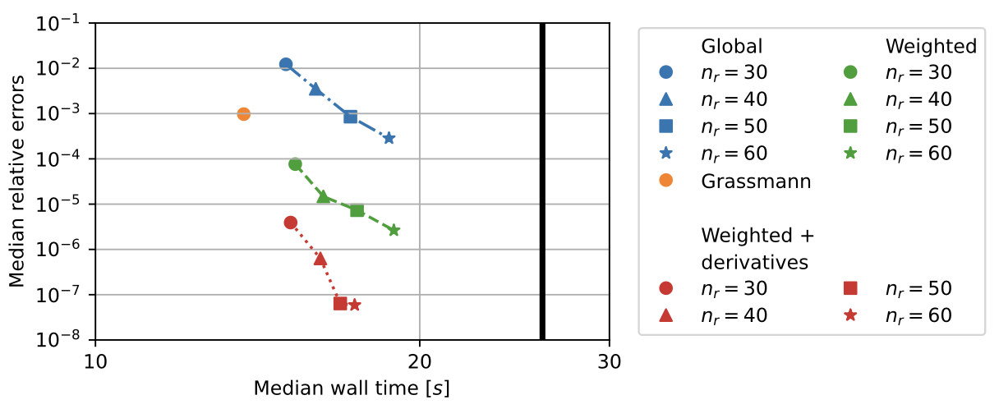

Projection-based model reduction for accelerated high-fidelity simulation
- Context
- Proper orthogonal decomposition approximates simulation states in a small basis assembled from previously computed solutions.
- Gap
- A fixed basis can lose accuracy as the design changes, while sampling an entire high-dimensional design space is impractical.
- Research goal
- Adapt reduced bases to the designs visited during optimization while limiting the cost of basis updates and full-order simulations.
Selected studies
ReferencesAccelerating transonic aerodynamic design with weighted POD
Global and weighted POD approximate compressible-Euler solutions during lift-constrained drag minimization of the Simple Transonic Wing. The weighted basis improves state accuracy, and both reduced models evaluate at least an order of magnitude faster than the full model on the tested coarse mesh with zeroth-order elements.
Sebastiaan P. van Schie, John T. Hwang. Computational Framework for High-Fidelity Aerodynamic Shape Optimization Using Weighted POD. AIAA AVIATION 2026 Forum, 2026.
@inproceedings{vanschie2026computational,
author = {Sebastiaan P. van Schie and John T. Hwang},
title = {Computational Framework for High-Fidelity Aerodynamic Shape Optimization Using Weighted POD},
booktitle = {AIAA AVIATION 2026 Forum},
year = {2026},
doi = {10.2514/6.2026-4782},
url = {https://doi.org/10.2514/6.2026-4782},
note = {Metadata verification: Crossref title}
}





Updating reduced bases through structural design changes
Weighted POD assigns greater importance to snapshots near the current design and updates the basis during optimization. Efficient basis updates and an extension using basis derivatives reduce shell-solution errors relative to global POD and Grassmann interpolation, without requiring an offline training set spanning the design space.
Sebastiaan P. C. van Schie, Boris Kramer, John T. Hwang. Weighted Proper Orthogonal Decomposition for High-Dimensional Optimization. arXiv:2508.09084v1, 2025.




References
- Sebastiaan P. van Schie, John T. Hwang. Computational Framework for High-Fidelity Aerodynamic Shape Optimization Using Weighted POD. AIAA AVIATION 2026 Forum, 2026.DOIPDF
@inproceedings{vanschie2026computational, author = {Sebastiaan P. van Schie and John T. Hwang}, title = {Computational Framework for High-Fidelity Aerodynamic Shape Optimization Using Weighted POD}, booktitle = {AIAA AVIATION 2026 Forum}, year = {2026}, doi = {10.2514/6.2026-4782}, url = {https://doi.org/10.2514/6.2026-4782}, note = {Metadata verification: Crossref title} } - Sebastiaan P. C. van Schie, Boris Kramer, John T. Hwang. Weighted Proper Orthogonal Decomposition for High-Dimensional Optimization. arXiv:2508.09084v1, 2025. Preprint
- Sebastiaan P. van Schie, John T. Hwang. Model Reduction of Isogeometric Shell Structures For Large-Scale Design Optimization. AIAA AVIATION 2023 Forum, 2023.DOIPDF
@inproceedings{vanschie2023model, author = {Sebastiaan P. van Schie and John T. Hwang}, title = {Model Reduction of Isogeometric Shell Structures For Large-Scale Design Optimization}, booktitle = {AIAA AVIATION 2023 Forum}, year = {2023}, doi = {10.2514/6.2023-3720}, url = {https://doi.org/10.2514/6.2023-3720}, note = {Metadata verification: Crossref title} } - Sebastiaan P. van Schie, John T. Hwang. Towards Hyper-Reduced Weighted POD for Large-Scale Aerodynamic Design Optimization. AIAA SCITECH 2026 Forum, 2026.DOIPDF
@inproceedings{vanschie2026towards, author = {Sebastiaan P. van Schie and John T. Hwang}, title = {Towards Hyper-Reduced Weighted POD for Large-Scale Aerodynamic Design Optimization}, booktitle = {AIAA SCITECH 2026 Forum}, year = {2026}, doi = {10.2514/6.2026-1212}, url = {https://doi.org/10.2514/6.2026-1212}, note = {Metadata verification: Crossref DOI} } - Bingran Wang, Min Sung Kim, Taewoong Yoon, Dasom Lee, Byeong-Sang Kim, Dougyong Sung, John T. Hwang. Design Optimization of Semiconductor Manufacturing Equipment Using a Novel Multi-Fidelity Surrogate Modeling Approach. Optimization and Engineering, 27(2), 1451–1479, 2026.PDF
@article{wang2026design, author = {Bingran Wang and Min Sung Kim and Taewoong Yoon and Dasom Lee and Byeong-Sang Kim and Dougyong Sung and John T. Hwang}, title = {Design Optimization of Semiconductor Manufacturing Equipment Using a Novel Multi-Fidelity Surrogate Modeling Approach}, journal = {Optimization and Engineering}, volume = {27}, number = {2}, pages = {1451--1479}, year = {2026} } - Michael Warner, John T. Hwang. Reduced Jacobian Supervision for Data-Efficient Operator Learning in High-Dimensional Design Spaces. AIAA AVIATION 2026 Forum, 2026. Distribution Statement A: Approved for public release; distribution is unlimited. PA# AFRL-2026-2144DOIPDF
@inproceedings{warner2026reduced, author = {Michael Warner and John T. Hwang}, title = {Reduced Jacobian Supervision for Data-Efficient Operator Learning in High-Dimensional Design Spaces}, booktitle = {AIAA AVIATION 2026 Forum}, year = {2026}, doi = {10.2514/6.2026-4806}, url = {https://doi.org/10.2514/6.2026-4806}, note = {Metadata verification: Crossref title} }
Research connections